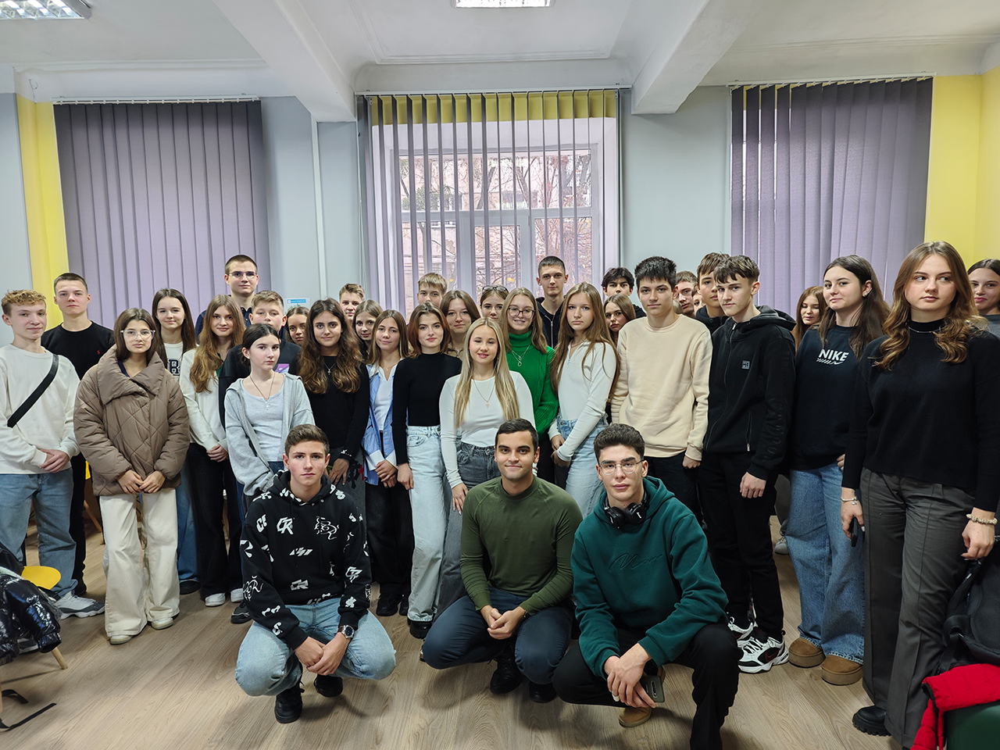
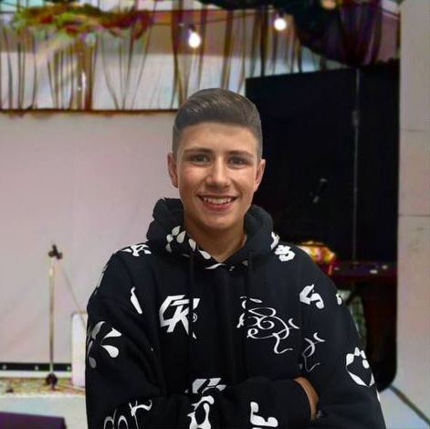

Які наші обов'язки?
Ми - Рада Президента Вінницького ліцею №4. Наші члени - найкращі учні в школі. Ми самостійно ведемо сторінки В Instagram, Youtube, Tik-Tok, Telegram. Кожного святкового дня, ми провидимо цікаві активності для наших учнів. Також, ми відповідальні за:
- Проведення цікавих активностей для учнів
- Розробку квестів для урізноманітнення шкільного життя
- Організування захоплюючих конкурсів
- Створення челенджів

Наші лідери
Лемещак Єгор
Заступник Президента
Хело, мене звати Єгор. Я заступник президентки ліцею і громадський діяч. Реалізовую свій проєкт і допомагаю в організації різних заходів. Представляю школу на міському рівні. Координую волонтерський центр.
InstagramГресько Марія
Президент
Усім привітик! 🤗 Я Марія і я є Президенткою ліцею №4. Займаюсь активною громадською та волонтерською діяльністю. Відстоюю права наших учнів. Організовую різні заходи, тренінги, марафони та форуми на міському рівні, але звичайно ж не забуваю і про наш ліцей. Завжди готова допомогти вам та вислухати цікаві пропозиції!
Instagram
Музичук Сергій
Заступник Президента
Сергій, заступник президентки ліцею, шкільний та міський омбудсмен. Я зацікавлений у вивченні інформаційних технологій, права, філософії та психології. Постійно розвиваю свої знання та навички, завдяки чому стаю все більш компетентним у своїй галузі.
Instagram